International Project Management & Business Development Executive
Environmental Engineer · International Project Management & Business Development Executive
International projects. Lasting partnerships.
Japanese citizen · Mediterranean origin · Based in Tokyo
I am an environmental engineer and international project management and business development executive based in Tokyo, with more than 20 years of experience in Japan and overseas. My work spans architecture, infrastructure and urban development across North Africa, the Middle East, East Asia and Europe.
Combining an engineering perspective with commercial and cross-cultural experience, I help Japanese organizations develop opportunities and advance complex international projects. I work with clients, government agencies, royal family representatives, investors and developers to connect business objectives with local requirements.
My experience also encompasses international public relations, corporate branding and overseas office establishment. Earlier work in geopolitical, security and disaster risk analysis informs how I assess unfamiliar business environments, while Japanese, English, French and Arabic support my work across markets and cultures.
I turn international business opportunities into coordinated project action. I bring clients, government stakeholders and corporate partners to a shared understanding of objectives, negotiate commercial terms and coordinate multidisciplinary teams around technical requirements, schedules, costs and risks.
Drawing on omotenashi and kikubari—Japanese hospitality and thoughtful attention to others’ needs—I build trust, clarify priorities and resolve differences across languages and business cultures. Publications, events, project promotion and support for overseas office openings connect international communications with business development. My earlier geopolitical, security and disaster risk-analysis experience informs market assessment.
Reviewing project drawings and models
International market entry strategy
Strategic alliance development
Government, royal family and investor relations
Executive-level and commercial contract negotiations
Infrastructure and urban development project management
Public–private partnership project management
Multinational team leadership
Schedule, cost and risk management
Consensus building and stakeholder coordination
Cross-cultural communication
International corporate branding and public relations
Languages
Japanese · English · French · Arabic — Business proficiency in all four languages
Selected Design Projects
International architecture, infrastructure and urban development projects. My responsibilities varied by assignment; the entries below distinguish the project itself from my contribution.
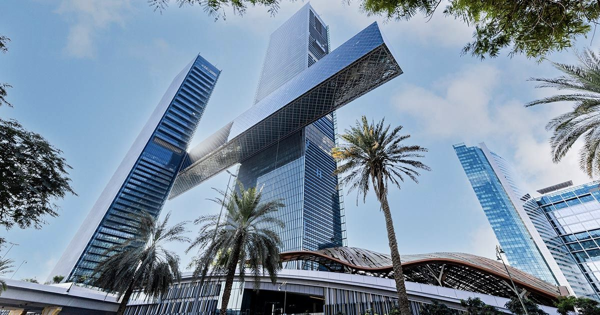
One Za’abeel
Dubai, UAE
A landmark development featuring two towers connected by THE LINK, bringing together hospitality, residential, office and retail spaces.
My contribution
Oversaw the project process, coordinated government and corporate stakeholders, and supported events and international public relations.
Tadawul Tower
Riyadh, Saudi Arabia
The headquarters of the Saudi Stock Exchange in Riyadh.
My contribution
Secured the project through client negotiations and presentations, then managed client relations and project coordination.
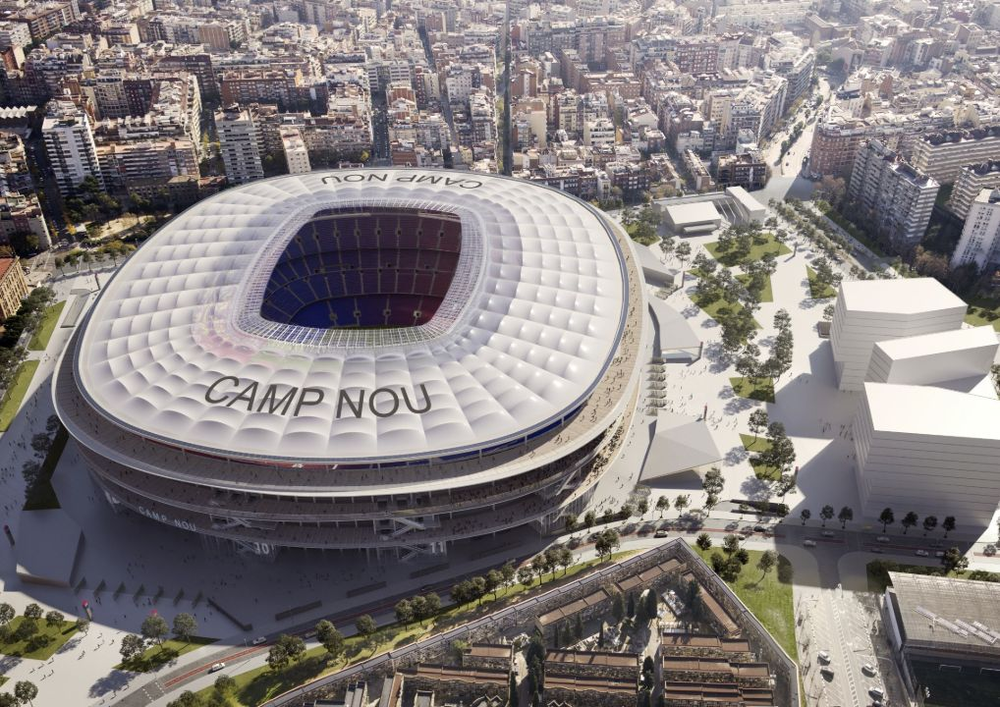
Futur Camp Nou
Barcelona, Spain
A redevelopment proposal for FC Barcelona’s Camp Nou stadium.
My contribution
Led client communications and presentations contributing to the project win, followed by client relations and coordination of the redevelopment proposal.
Grand Mosque Expansion
Mecca, Saudi Arabia
Expansion of the Grand Mosque in Mecca and work at associated pilgrimage sites.
My contribution
Managed client relations, negotiations and coordination throughout the ten-year phased programme, including guidance on religious considerations.
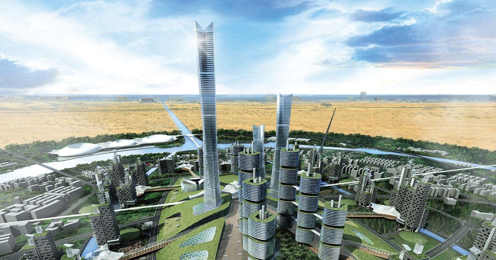
Cool City and Eco Towers
Dubai & Abu Dhabi, UAE
An urban design study exploring energy-efficient buildings and sustainable city development.
My contribution
Led the study process, coordinated government bodies and participating companies, and supported related events and international communications.
New Financial District of Colombo Port City
Colombo, Sri Lanka
A waterfront financial district proposal combining offices, hospitality, retail and public spaces.
My contribution
Led overall coordination and provided design support, aligning the client, design team and other stakeholders.
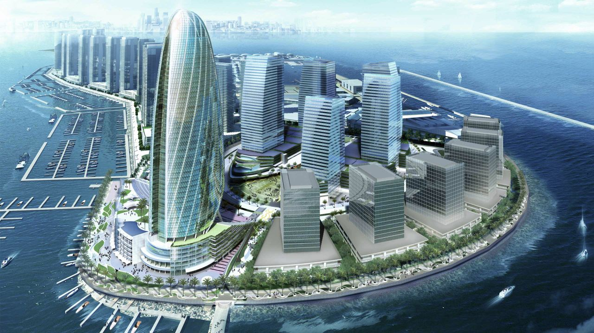
Dubai Maritime City Landmark Tower
Dubai, UAE
A waterfront landmark tower proposal inspired by wind, sails and ships.
My contribution
Led client negotiations and presentations contributing to the project win, then managed client relations and project coordination.
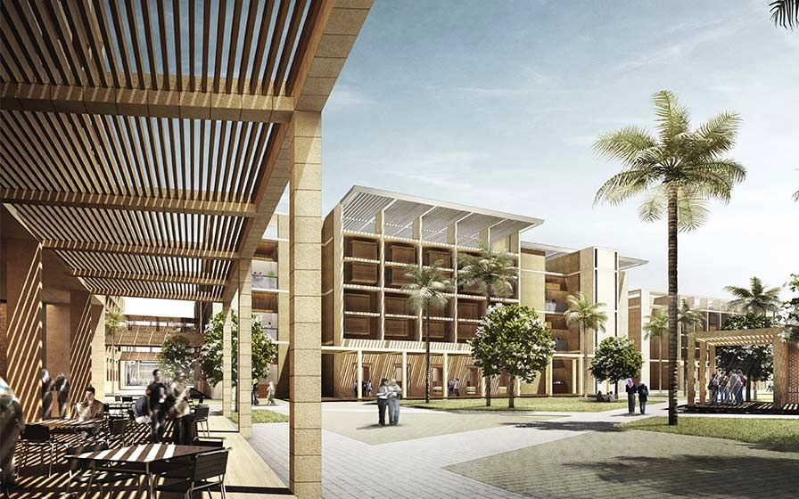
E-JUST Campus
Alexandria, Egypt
The Egypt-Japan University of Science and Technology campus.
My contribution
Presented the proposal to the client, contributing to the project win, then supported client relations and proposal coordination.
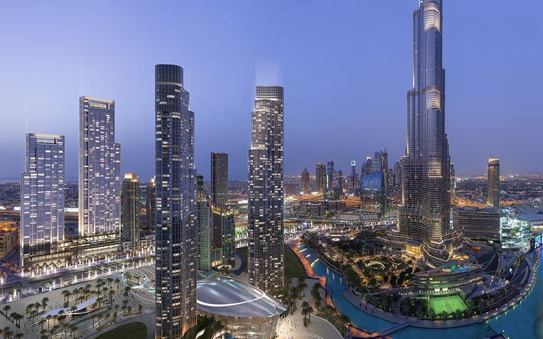
Forte Towers
Dubai, UAE
A residential tower development in Downtown Dubai.
My contribution
Led client negotiations and presentations contributing to the project win, then managed client relations and project coordination.
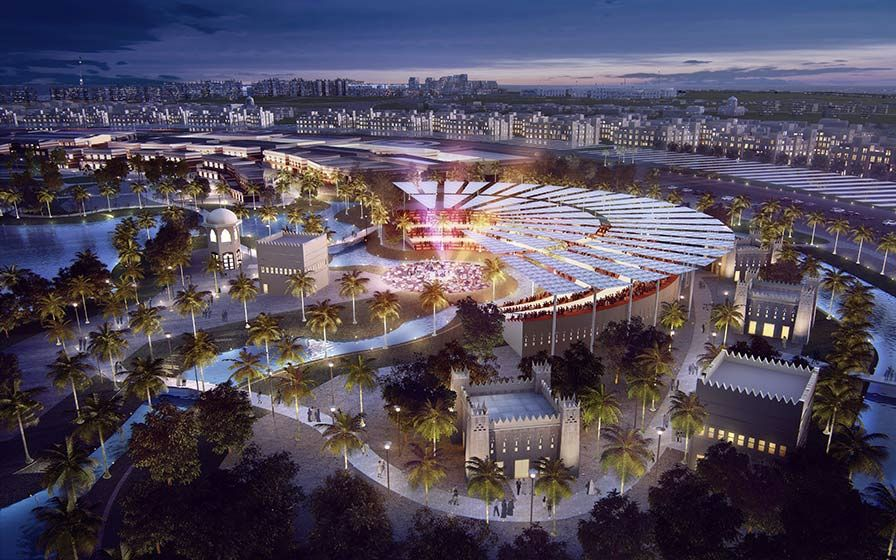
North Riyadh
Riyadh, Saudi Arabia
An urban development proposal integrating buildings, landscape and public spaces.
My contribution
Led client negotiations and presentations contributing to the project win, then managed client relations and project coordination.
Mongol Tower
Ulaanbaatar, Mongolia
A mixed-use tower concept combining hotel, residential, office and retail spaces.
My contribution
Led client negotiations and presentations contributing to the project win, then managed client relations and project coordination.
New Dubai Skyline
Dubai, UAE
A residential tower concept developed around the theme “Above the Clouds”.
My contribution
Led client negotiations and presentations contributing to the project win, then managed client relations and project coordination.
Shanghai West Bund International AI Tower and Plaza
Shanghai, China
A mixed-use development combining AI-focused offices, commercial spaces and a public plaza in Shanghai’s West Bund.
W350
Tokyo, Japan (concept)
A research and development concept for a 350-metre timber high-rise integrating greenery into urban life.
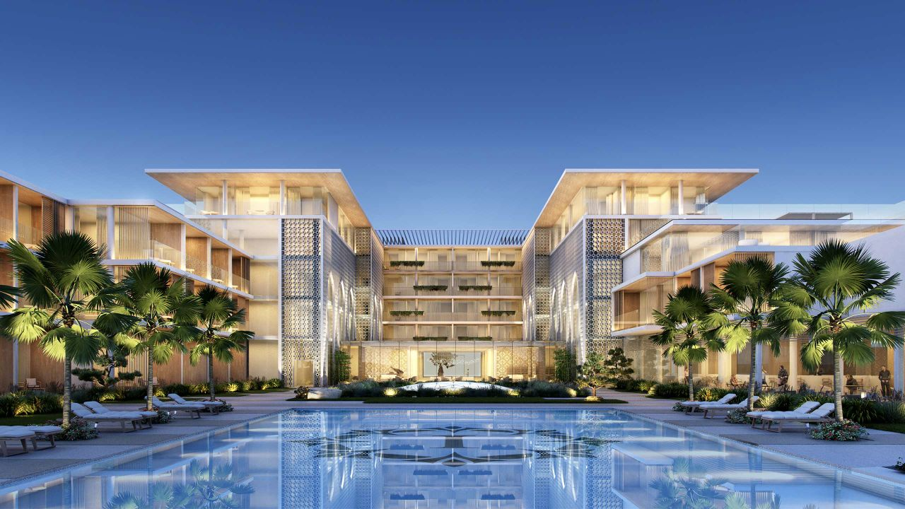
Imarat Resort
Issyk-Kul, Kyrgyzstan
A lakeside resort proposal combining hotel accommodation, apartments and landscaped leisure spaces.
Xili Transportation Hub
Shenzhen, China
An integrated transport hub connecting rail services, urban development and green public spaces.
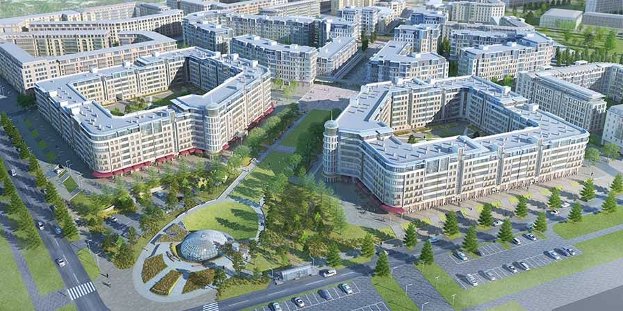
Preobrazhensky
Krasnoyarsk, Russia
A residential development integrating neighbourhood planning, landscaped courtyards and smart-city concepts.
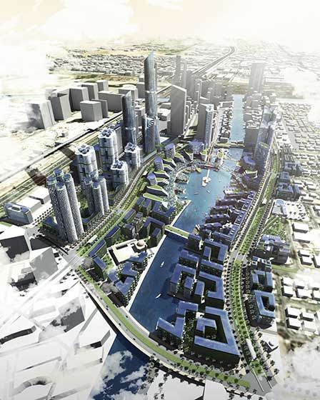
Jumeirah Gardens — Technopreneur City
Dubai, UAE
An urban masterplan proposal for an innovation-focused district combining business, living and public spaces.
Selected Branding Initiatives
Initiatives expressing Nikken Sekkei’s identity and strengthening its presence in international markets.
The Poetry of Architecture
An exclusive gift book bringing together Japanese art, haiku and architectural philosophy. Through eight themes, it expresses Nikken Sekkei’s values and the spirit of omotenashi and kikubari—Japanese hospitality and thoughtful attention to others—for distinguished recipients, including members of royal families.
My contribution
Served as core project manager, guiding the creation of a carefully crafted publication reflecting Japanese hospitality and attention to detail.
Cityscape Global is an international real estate exhibition bringing together developers, investors and industry professionals. Nikken Sekkei participated to strengthen its brand presence, generate international media exposure and develop new project opportunities.
My contribution
Led participation from planning through delivery and follow-up. Coordinated internal teams and external partners, invited distinguished guests, managed exhibition operations, presented projects to visitors and arranged international media coverage.
Outcome: Generated new project enquiries and offers through relationships developed at the event.
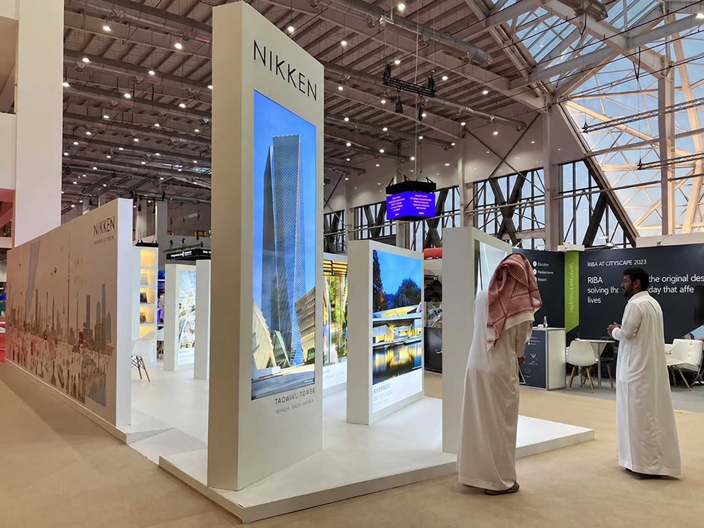
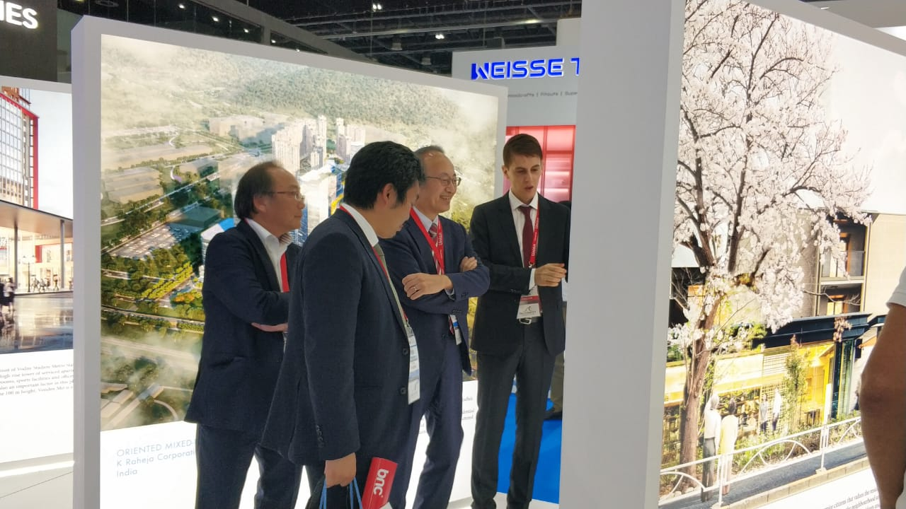
Presenting projects to distinguished guests
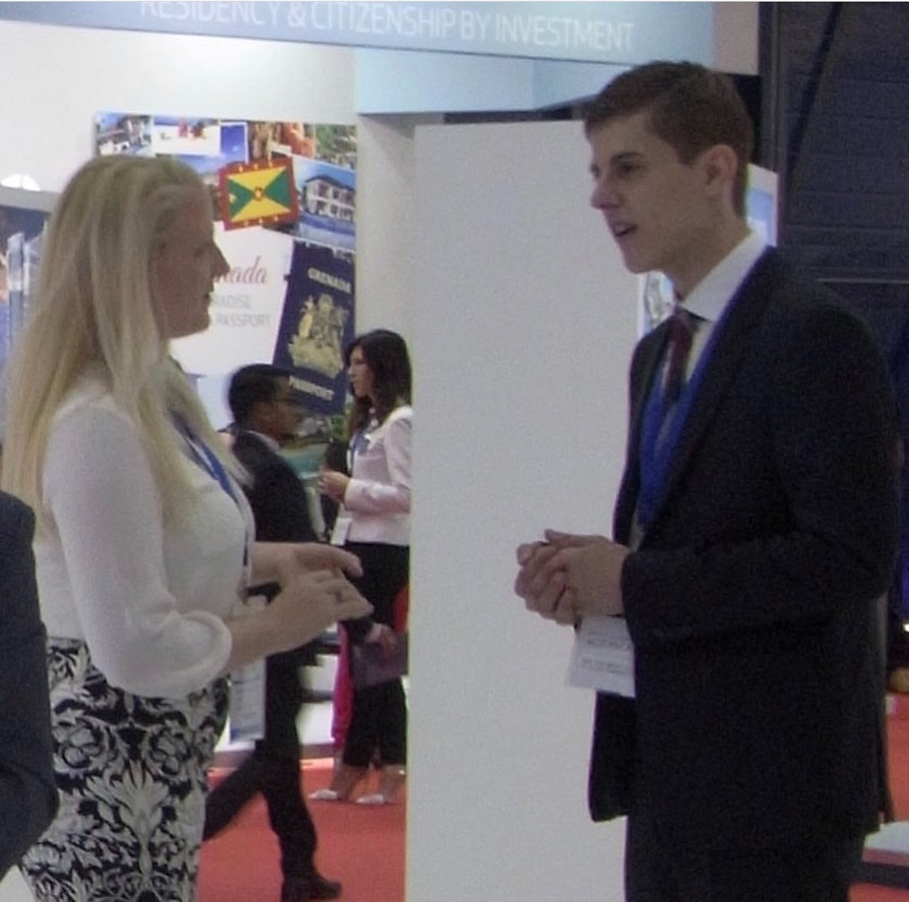
Dialogue with international visitors
Selected PR Materials
Selected publications and brochures presenting projects, regional experience and corporate capabilities to international audiences.
My contribution
Coordinated publications and communications materials as part of international public relations and business development.
Led client engagement and presentations to develop international opportunities and secure commissions.
Represented Nikken Sekkei in negotiations with government agencies, royal family representatives, investors and developers.
Negotiated commercial contract terms and aligned proposals with clients, senior management and project teams.
Key achievements
Secured Tadawul Tower through client negotiations and presentations; continued with client relations and project coordination.
Contributed to winning Futur Camp Nou and E-JUST Campus through client communications and presentations.
Facilitated consensus among international stakeholders and advanced decisions on complex project and commercial matters.
Large-Scale International Project Management
Responsibilities
Managed international architectural, infrastructure and urban development assignments across North Africa, the Middle East, East Asia and Europe.
Coordinated work across planning, proposals, design, procurement, construction and site supervision, according to assignment.
Led multinational teams of architects, engineers, consultants and specialists, coordinating schedules, costs, risks and client requirements.
Key achievements
One Za’abeel: Oversaw the project process, coordinated government and corporate stakeholders, and supported events and international public relations.
Grand Mosque Expansion: Managed client relations, negotiations and coordination across the ten-year phased programme.
Cool City and Eco Towers: Led the study process, coordinated government bodies and participating companies, and supported related events and international communications.
Led multidisciplinary teams of more than 50 professionals on international assignments.
International Public Relations, Branding & Overseas Expansion
Responsibilities
Led international public relations and branding activities supporting project promotion and business development.
Coordinated award submissions, corporate publications, brochures, marketing materials and executive presentations.
Organized client site visits, supported executive visits and helped establish overseas offices.
Key achievements
Cityscape: Led participation from planning to follow-up, including guest invitations, exhibition operations, visitor presentations and international media coverage; generated new project enquiries and offers.
Supported the establishment of multiple overseas offices and the associated expansion of international operations.
The Poetry of Architecture: Served as core project manager for the corporate gift book, reflecting Japanese art, architecture and hospitality.